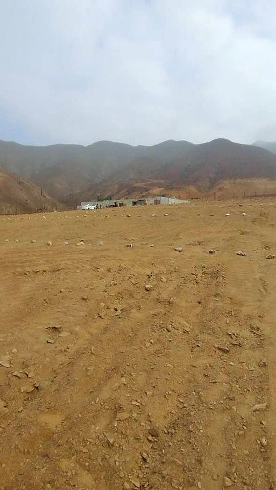

PEN45 0.6 ha

🌳 ¡TU INVERSIÓN SEGURA EN ESTE TERRENO CAMPESTRE TE ESPERA EN QUIRIHUAC! 🏡✨ Lotes en Venta de 6000m² ¡Vive rodeado de naturaleza con una vista panorámica espectacular y la tranquilidad que mereces! Ideal para construir tu casa de campo, bungalow o proyecto de descanso, con una ubicación privilegiada y clima soleado todo el año. 📌 CARACTERÍSTICAS DE LOS TERRENOS: - Áreas del Terreno: 6,000m² - Ubicación exclusiva: En Quirihuac, camino a Poroto (a solo 2 km del Nuevo Country Club) y a 25 minutos de Trujillo, clima seco todo el año - Seguridad y privacidad: Ubicados en zona elevada con ac